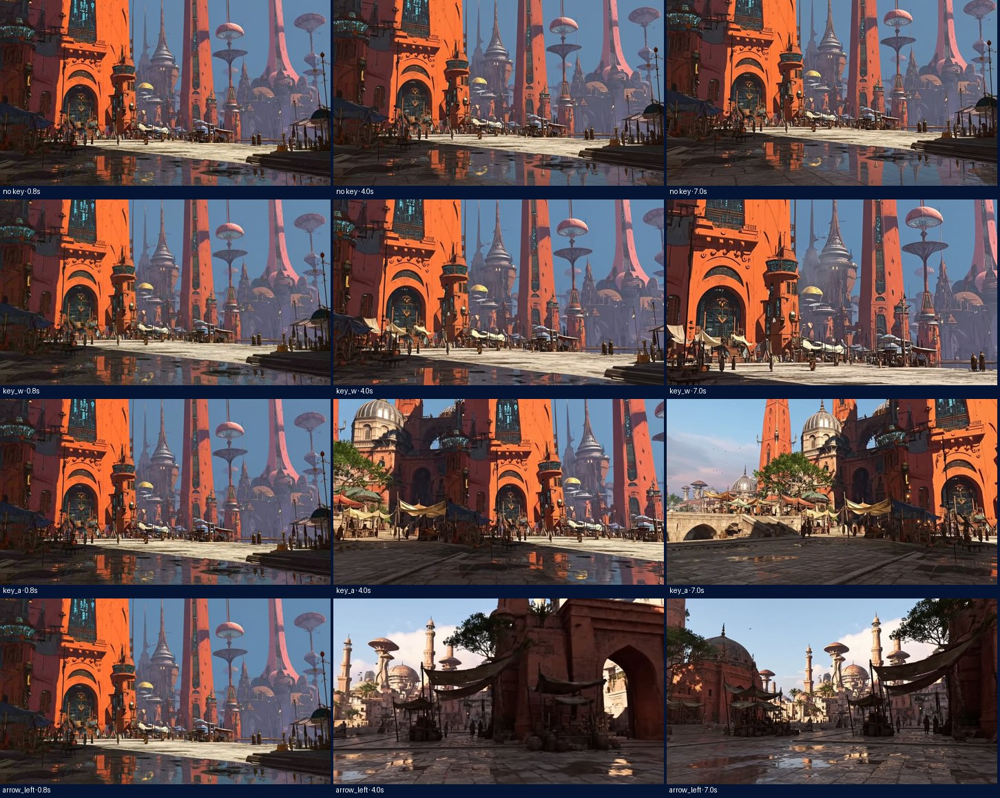
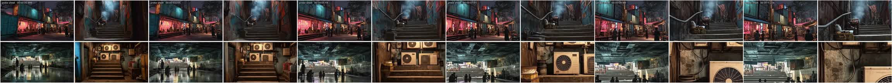
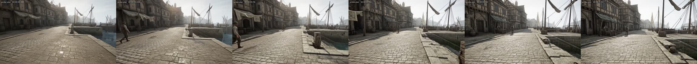
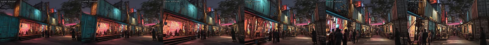
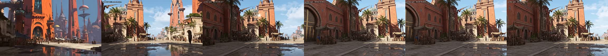

WYGWYL · THE TIDELINE
Lab Notebook — what we tried with the world model, and what it taught us
Every experiment so far, in order: the question, what I expected, exactly what was sent, what came back, and what I got wrong. 11 entries, about 45 sessions' worth of footage, roughly $50.
What I now believe
- The seed image decides almost everything: place, style, how alive it is, where the camera can go. Text after the start only adds things near the camera.
- Third person works and repeats. “A man ahead with his back to us, the camera follows” held in every take that asked for it.
- Keys are real but small. Forward, sideways and turn each do something different; none covers much ground; there is nothing stable behind the camera.
- A cue takes about 3 seconds to show early in a take and longer later. More than one cue every 7–8 seconds piles up.
- I have been testing the wrong thing. “The noun appeared” is not “the world transformed”. The next tests need a before and an after that differ in kind, not in props.
What I got wrong along the way
- Trusted the treatment over the poem (a choir where the line says empty).
- Sent a video at the wrong speed because I assumed a frame rate.
- Called a camera pan a spin without checking the key.
- Called the grey-box take a success from sampled frames; you watched it and it was not.
- Kept walking forward on flat ground in nearly every test, so nothing could happen to him.
Experiments worth running next, each with a pass condition written first
- Transform, don’t add. One cue only, 20 s: “the street he is walking on turns to water and he sinks to his waist.” Pass: his body is visibly lower in frame and the ground is water. Tests whether anything can happen to him.
- Before/after seeds. Two sessions on the same frame, one seeded dry and grey, one seeded flooded and blue, cross-dissolved on his word in the edit. Tests whether the transition belongs in the cut, not in the model.
- Four cameras. A sheet seed on purpose: four views of one zone running together under one line of the poem.
- Life from the image. Seed with a frame that is already crowded and moving, ask for nothing. Compare with the “wildly alive” text probe.
- Exaggeration ladder. The same 12 s take three times with one cue at three strengths: plain, strong, absurd. Find how hard the words must push.
01
Poem 03, first full take · failed
- Question
- Can generated cues from the treatment drive a whole poem?
- Expected
- Each 8–10 s patch cue would change the scene; a director model would correct drift.
- Sent, word for word
SEED: a 329-word generated seed (style, place, people, water, sound, mood) + chapel-on-a-shore image. CUES, e.g.: “Empty chapel: pews, choir, baptism pool. Rain pools, steady. In frame: the Choir (Black women and men, deep blue choir robes with white stoles).”
- Keys
- W held through every patch
- What happened
- Went through the chapel door at 14 s and showed a correctly dressed choir. Then walked into the altar wall; from 38 s it stared at a window. Later cues did nothing.
- Lesson
- Three separate mistakes: constant walking ends at a wall; the director answered 10–15 s late and one stale correction removed the choir; and the cue contradicted the poem, which says the choir stands are EMPTY. I took the treatment on trust instead of reading the lines.
02
Poem 03 from the lectern · failed
- Question
- Can we start on him at the lectern and walk into the world as he names it?
- Expected
- Wall parts on “temple”; we pass him; each named object appears on its word.
- Sent, word for word
SEED: A Black man in his thirties with close-cropped hair and a short beard, wearing a matte black mock-neck long sleeve and black trousers, stands reading at a clear acrylic lectern. Behind him is a painted wall. Blue water moves in from both sides of the frame along the ground. Photographic, soft practical light, humid air. The camera is at eye level, a few steps in front of him, and will walk forward past his left shoulder toward the wall. He stays where he is and keeps reading. Nobody else is here. Sound: a quiet room, water moving slowly, room for one man's speaking voice. Rain is the water of this place: it falls slowly and thickly, and it never hides a face. CUES: [for “temple”] The painted wall behind the man parts like a curtain onto an empty stone temple. We walk in past him. Nobody inside. why: He says 'an empty temple'. The world must open at that word, and it must be empty: the poem's first claim is absence. [for “pools”] Ahead in the empty nave: bare choir stands, and a sunken baptism pool, dry and cracked. Nobody. why: He lists what is empty: choir stands, prayer lines, Baptist pools. The first take put a choir here, which contradicts the line. [for “cobwebs”] Cobwebs hang thick over the wooden pews. Dust falls. The wood is soft and crumbling. why: 'Pews taken by cobwebs, doused in disintegration': time, not people, has taken the seats. [for “gift”] A side door stands open ahead. On its stone step: opened gift boxes, lids off, ribbons loose, empty. Nobody. why: 'Opened gift boxes placed outside the side doors': the gifts were taken and the givers left. It also gives us a door to walk out through. [for “rains”] Thunder. Heavy slow rain pours through the roof and washes the walls away until only open wet shore remains. why: 'It thunders, then it rains until nothing remains': the building has to go, and the rain has to be what removes it. [for “goods”] The storm clears. On the wet sand, household goods laid out in rows like a yard sale: chairs, lamps, folded clothes. why: 'What was once love now goods': a shared home reduced to things with no one to own them. [for “lightning”] A black scorched crack from lightning splits the sand, dividing the rows of goods into two halves. why: 'Broken and sealed apart by lightning': the split is between two people, so the goods divide in two. [for “breads”] Loaves of bread lie on the sand, soaked through and falling apart in the rain. why: 'Daily breads soaked and delivered rotted by rain': what fed them daily has spoiled. [for “blankets”] Stained blankets lie in a heap. Thin puppet strings hang down onto them from the grey sky. why: 'Blankets soiled by venomous puppeteers': the bed, and someone else's hands on it. Strings, no puppeteer shown. [for “footsteps”] Two sets of men's footprints, side by side, lead away across the wet sand toward the water. Nobody in sight. why: 'Two sets of button-printed footsteps': the two men appear only as what they left. This is the couple, by absence. [for “shattered”] Where the footprints end, a tambourine lies broken in pieces on the sand. why: 'A tambourine shattered into pieces': the sound that opened the poem ends as an object. The walk stops here.- Keys
- W for 40% of each spoken line
- What happened
- Wall parted about 1 s after “temple”; pool appeared on “pools”; he stayed himself. But the camera walked into his face and he filled the frame from 26 s. Goods and lightning arrived 5–8 s late; bread, blankets, footprints and tambourine were never seen.
- Lesson
- A person in the middle of the seed frame is an obstacle, not a doorway. Eleven cues in 60 s is too many: later ones queue up. I also shipped the first video at the wrong speed because I assumed 24 frames a second; it was 17.
03
Litmus: walk in through a door · failed
- Question
- From an exterior frame with a doorway, walking forward plus one cue takes us through the door into an interior.
- Expected
- Walking 14 s reaches and enters the doorway.
- Sent, word for word
SEED: A wet stone plaza at dusk in an Afrofuturist harbour city. Ahead stands a tall terracotta temple with a great arched doorway, open and dark inside. The camera is at eye level on the plaza, facing the doorway. Photographic, practical light. Nobody in the foreground. CUE at 6 s: We walk through the great arched doorway into the temple hall: stone columns, candlelight, a long empty nave.
- Keys
- W from 0.5 s to 14 s
- What happened
- 1 of 2 takes ended inside, and that one jumped rather than arrived. The doorway barely grew in 14 s of walking.
- Lesson
- Walking covers little ground. A threshold must already be close in the seed frame. Two takes is too few to call a rate.
04
Litmus: follow the Poet in · partly
- Question
- The same walk-in works with the Poet in frame, seen from behind, entering ahead of us and staying the same man.
- Expected
- He appears from behind and enters ahead of us.
- Sent, word for word
SEED: A wet stone plaza at dusk in an Afrofuturist harbour city. Ahead stands a tall terracotta temple with a great arched doorway, open and dark inside. A Black man in his thirties with close-cropped hair, wearing a matte black mock-neck long sleeve, black trousers and black boots, stands a few steps ahead of the camera with his back to us, facing the doorway. The camera is at eye level behind him and follows him. Photographic, practical light. Nobody else nearby. CUE at 6 s: The Black man in the black mock-neck walks ahead of us through the great arched doorway into the temple hall: stone columns, candlelight. We follow behind him.
- Keys
- W from 0.5 s to 14 s
- What happened
- He appeared from behind in both takes and stayed the same figure for 16 s. Neither take got inside.
- Lesson
- Third person is chosen by the seed text and is repeatable. This was the first thing that worked twice.
05
Do the keys do anything · worked
- Question
- With no text at all, do W, A and arrow-left change the view differently?
- Expected
- If the keys are ignored, four takes look the same.
- Sent, word for word
SEED: A wet stone plaza at dusk in an Afrofuturist harbour city. Ahead stands a tall terracotta temple with a great arched doorway, open and dark inside. The camera is at eye level on the plaza, facing the doorway. Photographic, practical light. Nobody in the foreground. No cues.
- Keys
- one key held 1–7 s per take: none / W / A / arrow-left
- What happened
- None: still. W: forward. A: slid left to new buildings. Arrow-left: turned until the temple left frame. 240 video tokens per frame on every take.
- Lesson
- Movement is real and separable. One take per key shows it works, not how reliably.

06
The Poet walks down three streets · partly
- Question
- Does third-person walking hold in different zones, and can the camera circle him?
- Expected
- He walks 10 s; then a turn orbits him.
- Sent, word for word
SEED (place text is each shot’s own original prompt) + A Black man in his thirties with close-cropped hair, wearing a matte black mock-neck long sleeve, black trousers and black boots, stands a few steps ahead of the camera with his back to us. He walks away from us down the middle of this street at an easy pace. The camera is at eye level behind him and follows him, keeping his whole body in frame.
- Keys
- W 1–11 s, arrow-left 12–19.5 s
- What happened
- He walked in all three; climbed the escalator in the arcade. The turn panned away from him instead of circling; his clothes changed in the market take.
- Lesson
- Arrow keys turn the camera on the spot. I called it a spin before checking what the key does. Nothing in the world changed, so this tested walking only.
07
Word to world, poem 06 (grey-box and cel) · failed
- Question
- As he reads, does the world change around him through blue water, on his words?
- Expected
- Seven changes, each landing on its word; grey blocks become a city.
- Sent, word for word
SEED (grey-box): A simple grey-box model of a harbour city at night: flat untextured blocks, a few lit yellow windows, a pale path leading down to dark water, moonlight on the water. A Black man in his thirties with close-cropped hair, wearing a matte black mock-neck long sleeve, black trousers and black boots, stands a few steps ahead of the camera with his back to us and walks away from us at an easy pace. The camera is at eye level behind him and follows, keeping his whole body in frame. Keep the flat blocky untextured look until the water changes it. Ahead at the end of the path stand tall closed gates. SEED (cel): A flat cel-shaded cartoon street at dusk: large flat colour shapes with dark outlines, market stalls, soft pink and orange lights. A Black man in his thirties with close-cropped hair, wearing a matte black mock-neck long sleeve, black trousers and black boots, stands a few steps ahead of the camera with his back to us and walks away from us at an easy pace. The camera is at eye level behind him and follows, keeping his whole body in frame. Keep the flat cel-shaded cartoon look with outlines throughout. Ahead at the end of the street stand tall closed gates. CUES: [0.3s, for “gates” at 0.3s] Ahead of him, the tall gates swing open. They are white marble and have wings. why: the poem's first image; the world opens on its first word [3.8s, for “hymns” at 6.8s] Bright blue water made of small glowing white letters pours out through the open gates and runs down the path to his feet. why: words become water: what comes through the gate is language, as liquid [14.0s, for “yellow” at 17.0s] Where the blue water touches the ground, the ground becomes a road of yellow bricks, laid one by one ahead of him as he walks. why: 'eased generations down yellow brick roads': the water is what builds the road [19.8s, for “comets” at 22.8s] Comets cross the night sky above him, and their light runs in lines across the water. why: 'to follow comets to the capital city' [24.6s, for “resurrecting” at 27.6s] The blue water rises to his knees. Towers rise up out of the water on both sides of him, water streaming off them. why: 'resurrecting Atlantis': the city is what the water was hiding [31.4s, for “nature” at 34.4s] Vines and trees grow up the wet towers. Everything the water has touched now has colour and detail. why: 'the pack we've made here with nature' [42.7s, for “safe” at 45.7s] Windows light up one by one in blue and pink. In the doorways stand Black women and men of every age in long indigo and ochre robes, arms open to him. why: 'here we are all safe, here we are all one': the city is finished when it is inhabited- Keys
- W for the first 60% of each line
- What happened
- Grey-box: blue lettered water at his feet on “hymns”, yellow bricks, comets, a lit city with robed people by 46 s. Cel: a blue fountain, a second man appeared, camera stuck at the gates. You judged both failures.
- Lesson
- I reported the grey-box take as a success because the cues were visible in sampled frames. That is the wrong test. What was missing: the changes are decoration added around a man walking on a flat plane; nothing happens TO him or the ground he is on; the city arrives as a backdrop across the water, not as something that rises; the gates and towers never did what the lines say; and it reads as slow and literal, not surreal or fluid. I measured “did the noun appear” when the question is “does the world transform”.
08
Probe: sheet · partly
- Question
- Can a contact sheet of four views be given as one seed, so the model builds one territory from all four?
- Expected
- Probably not: it takes exactly one starting frame, so I expect it to treat the sheet as a picture of four panels, or to enter one panel and discard the rest.
- Sent, word for word
SEED IMAGE: seeds/sheet_naraka.jpg SEED TEXT: This picture is a reference sheet: four views of the same district of one city, a night market built from shipping containers with alleys and a flooded underpass. Begin standing inside that district at eye level, in a single continuous place that contains all four views nearby. Do not show panels or borders.
- Keys
- 1s key_down key_w, 10s key_up key_w
- What happened
- Stayed a grid of four panels for all 12 s — but each panel moved forward on its own, like four cameras running at once. [judge: 0.5s one_scene=no; 6.2s one_scene=no; 11.8s one_scene=no]
- Lesson
- A sheet is not merged into one territory. It could be used on purpose: four simultaneous views of a zone for the price of one session, cut apart afterwards.

09
Probe: plan · worked
- Question
- Can a map of the territory be the seed, with the camera dropped into it?
- Expected
- Unlikely to become street level; I expect it to stay a map and slide over it like a flat picture.
- Sent, word for word
SEED IMAGE: seeds/plan.jpg SEED TEXT: This picture is a map of an island city seen from above. Begin standing on the ground inside this city at eye level, on a street near the harbour, looking along the street. Do not show the map.
- Keys
- 1s key_down key_w, 10s key_up key_w
- What happened
- I was wrong. It dropped straight to street level on a harbour quay with a walking figure. But it is a generic old-European harbour: nothing of our map or our city survived. [judge: 0.5s street_level=yes; 6.2s street_level=yes; 11.8s street_level=yes]
- Lesson
- The image set the idea “harbour town” and the text did the rest. A map is not read as geography.

10
Probe: life · partly
- Question
- If the seed text demands exaggerated life, does the street fill with action without any mid-take cue?
- Expected
- Yes: the seed text is the strongest lever we have found, so crowd, motion and weather asked for here should appear and persist.
- Sent, word for word
SEED IMAGE: seeds/street020.jpg SEED TEXT: A Black man in his thirties with close-cropped hair, wearing a matte black mock-neck long sleeve, black trousers and black boots walks away from us down the middle of a night market street built from shipping containers; the camera follows behind him at eye level. The street is wildly alive: a dense crowd of Black women and men of every age in bright teal, orange and white wraps and coats dancing and carrying baskets, children running, banners snapping overhead, sparks rising from grills, flocks of birds wheeling, lanterns swinging, water running down the gutters. Everything moves, all the time.
- Keys
- 1s key_down key_w, 12s key_up key_w
- What happened
- The street had people from the first frame and a crowd by the end, but far short of “wildly alive”, and the man in black was not the main figure. [judge: 0.5s crowd=yes, man_from_behind=no; 7.2s crowd=yes, man_from_behind=no; 13.8s crowd=no, man_from_behind=no]
- Lesson
- Demanding exaggeration in words gives a mild version. The seed IMAGE sets how alive the world is; text nudges it.

11
Probe: spin · failed
- Question
- If the camera turns steadily in one direction, does it come back round to the place it started?
- Expected
- It will keep inventing new city rather than close the circle: nothing we have seen suggests it remembers what is behind it.
- Sent, word for word
SEED IMAGE: seeds/plaza008.jpg SEED TEXT: A wet stone plaza in an Afrofuturist harbour city, with a tall terracotta temple and an arched doorway. The camera stands still at eye level in the middle of the plaza and only turns.
- Keys
- 1s key_down arrow_left, 21s key_up arrow_left
- What happened
- It turned, invented new streets, changed from flat illustration to photographic, then stopped turning about halfway. It never came back to the start. [judge: 0.5s temple_visible=yes; 11.2s temple_visible=yes; 22.0s temple_visible=no]
- Lesson
- There is no stable place behind the camera. A full circle is not a test this model can pass, so do not build shots that need one.
